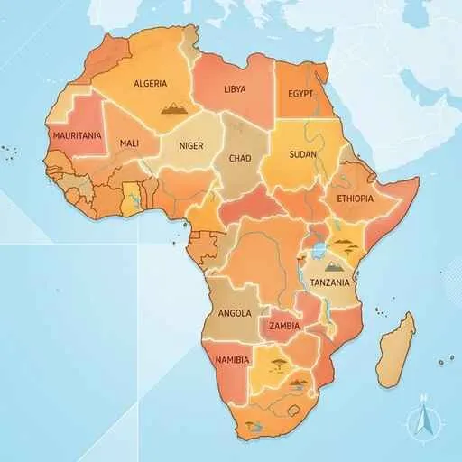

4. アフリカ州
アフリカ州は、広大なサハラ砂漠、長いナイル川などの大自然と、歴史的な植民地支配の影響を強く受けてきた地域です。かつての国境画定問題、資源・作物に頼るモノカルチャー経済、そして現代の急速な人口増加とIT技術の進歩（モバイル送金など）まで、知っておくべきポイントを解説します！
1. アフリカの自然環境（砂漠と気候）
赤道が中央を通るアフリカ大陸は、気候がほぼ赤道を中心に対称に分布する特徴を持ちます。
図1：野生動物が多く見られ、マサイ族などが遊牧を行うサバナ地域
- サハラ砂漠：大陸の北部を占める、世界最大の砂漠。
- サヘル：サハラ砂漠の南の縁（へり）に沿って広がる半乾燥地域。近年、過放牧や薪の伐採、気候変動などにより深刻な「砂漠化（さばくか）」が進行しており、世界的な問題になっています。サハラ砂漠より南の地域はサブサハラと呼ばれます。
- ナイル川：アフリカ大陸を北上して地中海へ注ぐ、世界最長の川。
- コンゴ盆地とキリマンジャロ：赤道直下の盆地には熱帯雨林が広がります。一方で、赤道付近にあるアフリカ最高峰のキリマンジャロ山は、標高が高いため山頂に万年雪があります。
- マダガスカル島：大陸から早い時期に分離したため、キツネザルなどの独自の生態系が進化し、孤立して維持されています。
2. 歴史的背景と「国境線」の課題
アフリカを学ぶ上で、ヨーロッパ諸国による植民地支配の爪痕を理解することは非常に重要です。

図2：植民地時代にヨーロッパ諸国によって引かれた「直線の国境線」
- 植民地支配と直線国境：かつてアフリカの大部分はヨーロッパ諸国によって支配されていました。その際、民族や言語の境界を無視して、経線や緯線に沿って機械的（人為的）に国境が引かれたため、アフリカの地図には直線的な国境が多く見られます。これが独立後の紛争の原因にもなりました。
- 悲劇の歴史：かつて、多くの黒人が労働力としてアメリカ大陸などへ「黒人奴隷（こくじんどれい）」として強制連行されました。
- アフリカの年（1960年）：植民地から一斉に独立が進んだ年。1960年だけで17カ国が一挙に独立を果たしました。
- AU（アフリカ連合）：アフリカ諸国の主権を守り、政治・経済的な統合と協力を強めるための国際組織です。
- アパルトヘイト（南アフリカ）：南アフリカ共和国で行われていた、極端な黒人・有色人種に対する「人種隔離政策」。この人権侵害の制度を撤廃するために尽力し、のちに同国初の黒人大統領となった人物がネルソン・マンデラです。
3. 経済構造（モノカルチャー経済と資源）
アフリカの経済は、特定の農作物や地下資源の輸出に頼りきりであり、世界経済の価格変動に振り回されやすいという弱点を持っています。
- モノカルチャー経済：特定の農産物や鉱産資源（カカオや原油など）の限られた品目の輸出だけに経済を依存する構造です。
- プランテーション農業：大規模な農園で、輸出用の商品作物を育てます。
- ガーナ・コートジボワール：カカオ豆の生産が有名（ガーナはかつて「ゴールドコースト」と呼ばれました）。
- ケニア：紅茶（茶）の栽培。マサイ族の牛の遊牧や野生動物のサファリ観光も盛んです。
- エチオピア：コーヒーの原産地。アフリカで最も古い独立国の一つです。
- 地下資源とレアメタル：アフリカは地下資源の宝庫です。コバルトやクロム、南アフリカの白金（プラチナ）など、ハイテク産業や排ガス浄化装置に欠かせない希少な金属「レアメタル」や、ボツワナのダイヤモンド、ナイジェリアの石油などが豊富です。
- フェアトレード：モノカルチャー経済の弱点を補い、途上国の生産者を不当な買いたたきから守るため、公正な価格で取引する「フェアトレード（公正取引）」が注目されています。
4. 現代アフリカの社会と急速な変化
- 人口爆発：アフリカの人口は急速に増加しており、「人口爆発（じんこうばくはつ）」と呼ばれています。これにより、都市部に労働者が集まるものの、適切な住まいが不足し、居住環境の極めて劣悪な「スラム」が発生して深刻な都市問題となっています。
- モバイル決済（Leapfrog現象）：固定電話や銀行口座が普及する前に、携帯電話（スマートフォン）が急速に普及しました。これにより、ケニアなどを筆頭にモバイル通信を用いたモバイル送金（電子決済）が日常インフラとして爆発的に広がりました。
- 主食の工夫：コートジボワールやガーナなどの地域では、キャッサバやヤムイモといったいも類（根茎類）が主食として広く食べられています。
- 新興国：2011年にスーダンから独立した南スーダンは、アフリカで最も新しい国です。
5. 宗教と文化の地域差
アフリカ大陸は、サハラ砂漠を境にして、文化や宗教が大きく2つに分かれています。
- アフリカ北部：アラビア語が広く使われ、イスラム教を信仰する国が多い（エジプトにはスエズ運河があります）。
- アフリカ中・南部（サハラ以南）：現地の言葉のほかに、旧宗主国の言語（英語やフランス語）を公用語とする国が多く、キリスト教や伝統的な宗教が多く信仰されています（スワヒリ語なども使われます）。
🔥 定期テスト対策・暗記のコツ
① 直線的な国境線の理由（超記述ターゲット！）
「アフリカの国境線に直線が多いのはなぜか？」という記述問題は必ず出ます！
「かつての植民地時代に、ヨーロッパの宗主国が民族や言語を無視して、経線や緯線を利用して境界を決めたから」と答えられるようにしましょう！
② モノカルチャー経済とその問題点
「特定の農産物や鉱産資源の輸出だけに頼る経済」の名前を答えさせられます。また、「その問題点は何か？」と聞かれたら、「天候による不作や、国際価格の変動によって国の経済が非常に不安定になること」と答えましょう。
③ サヘルの位置と砂漠化
「サハラ砂漠の南側の境界地域」の名前を「サヘル」と書けるようにしてください。また、サヘルで進行している問題「砂漠化」の理由（過放牧、森林伐採）もセットで暗記しておきましょう！